PODKOVA
saloon
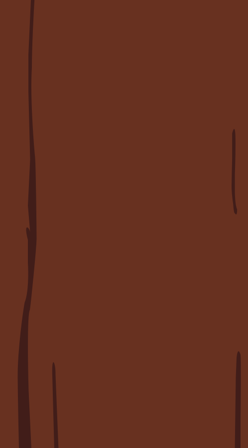
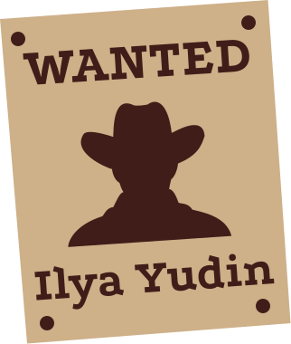
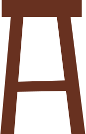
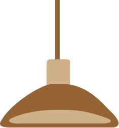
Создатели
шрифта
Илья Юдин — автор
первоначального дизайна
Podkova. Он
разработал
шрифт в 2010 году.
Алексей Ваняшин — в
январе
2017 года переработал
и расширил семейство
Podkova.
Он добавил новые начертания
и скорректировал
существующие.
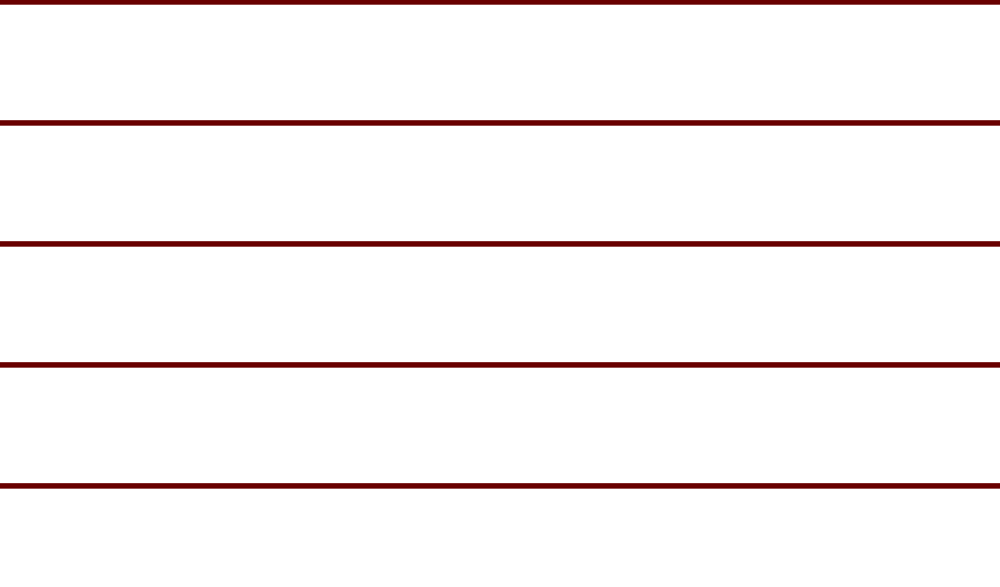
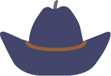
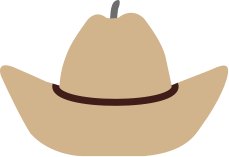
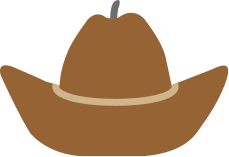
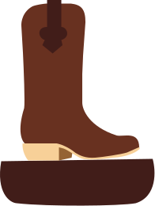
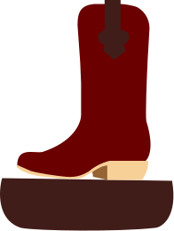
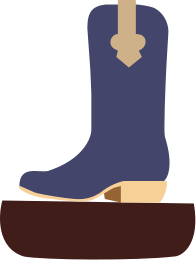
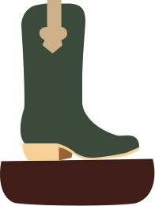
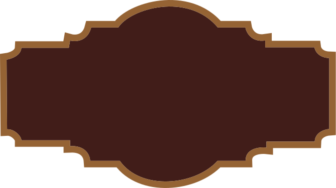
Вариативность
шрифта
Вариативная версия позволяет работать
с промежуточными значениями
между
начертаниями, создавая более плавный
переход от
тонкого к более
плотному начертанию.
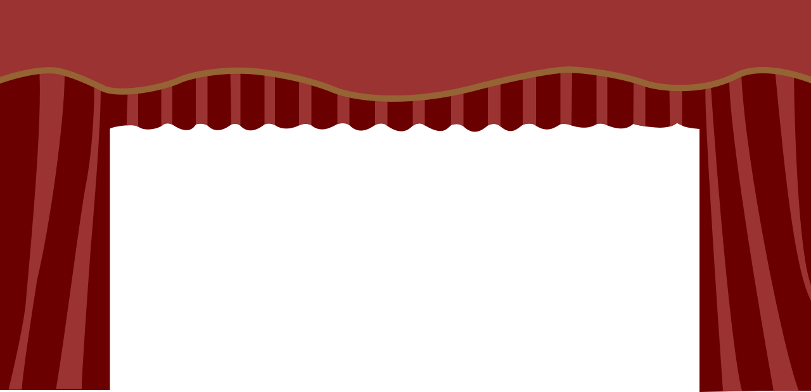
История шрифта
Podkova была первоначально разработана
Ильёй Юдиным в 2010 году.
Шрифт получил
название от русского слова «подкова» и был
создан
как монолинейный брусковый
шрифт с широкими пропорциями.
В
январе 2017 года Алексей Ваняшин
переработал и расширил семейство
Podkova.
В сентябре 2019 года Podkova стала
вариативным
шрифтом.


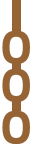
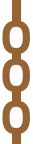
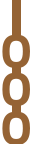


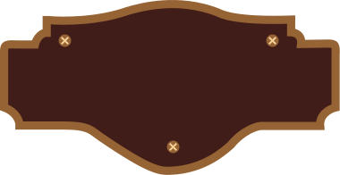
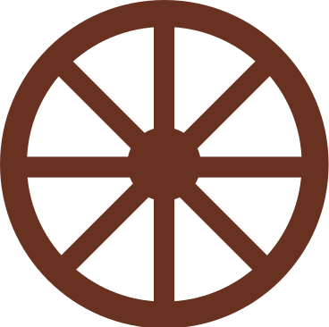
Начертания
шрифта
Medium
Regular
Bold
SemiBold
ExtraBold
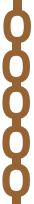
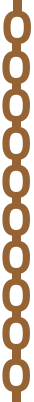
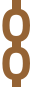
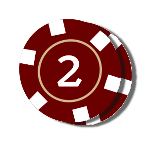
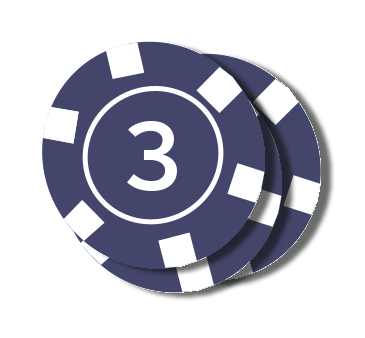
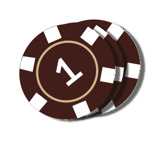
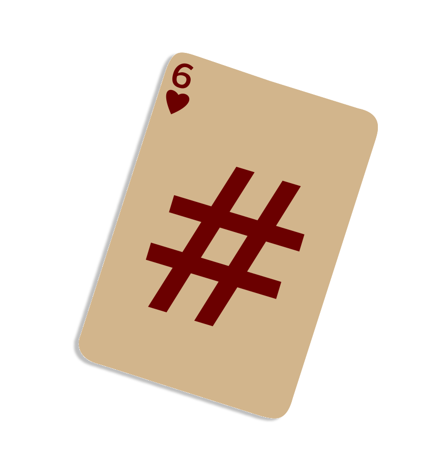
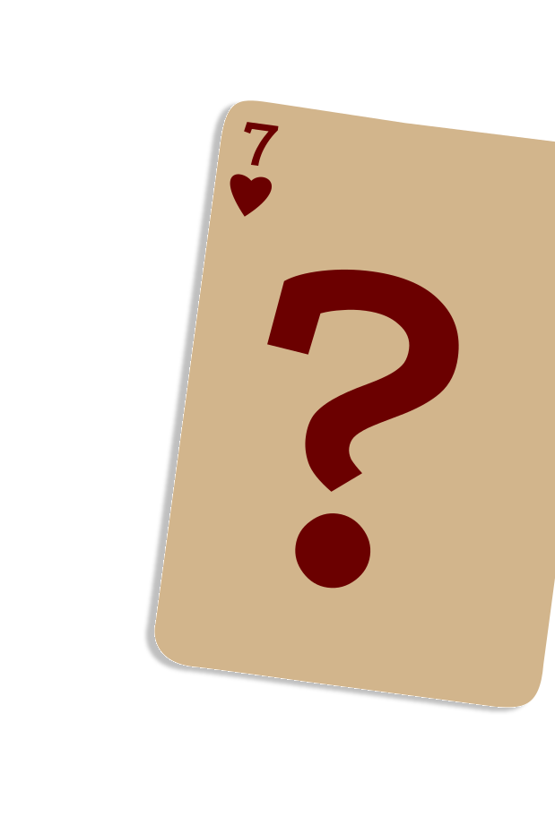
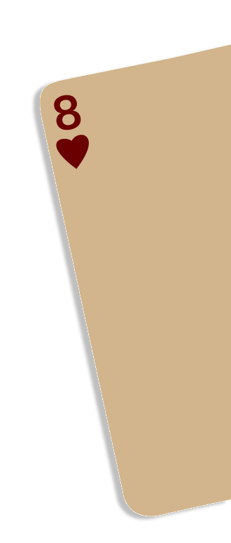
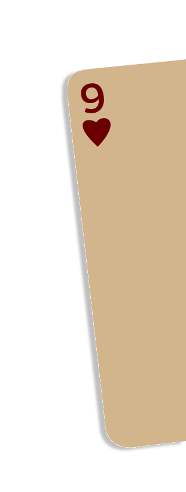
Цифры
шрифта
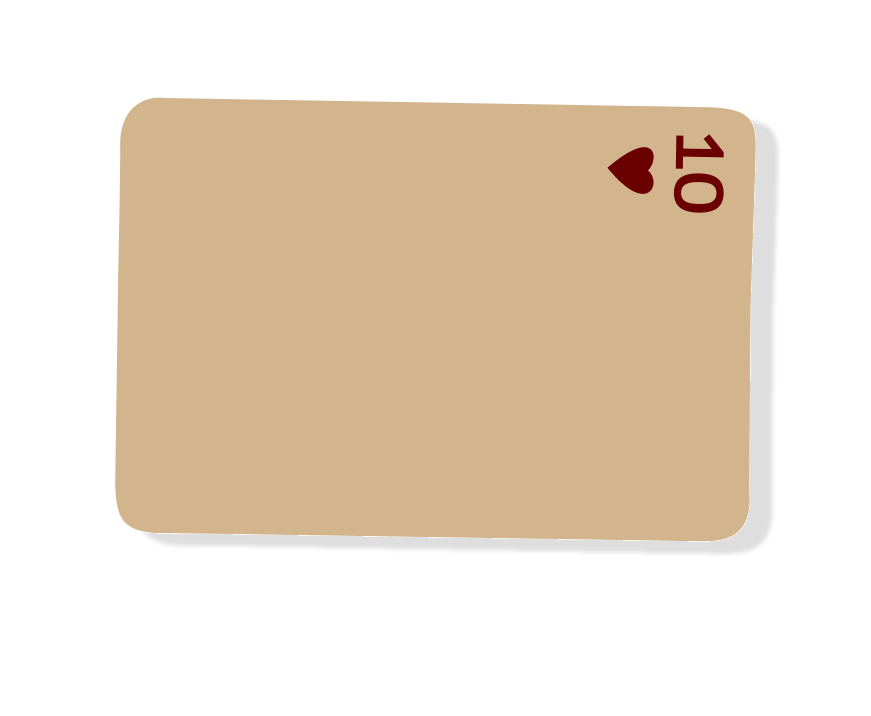
Цифры в Podkova выполнены
в том же монолинейном стиле,
что и
буквы: с равномерной толщиной
штриха и характерными прямыми
и
диагональными элементами.
Знаки
шрифта
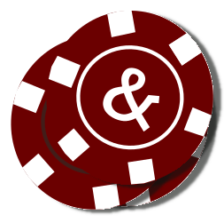
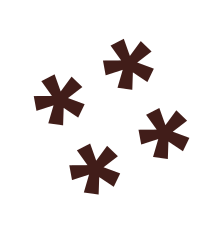
Podkova включает стандартные
знаки препинания и специальные
символы.
Также в шрифте есть
математические знаки, символы
валют и
типографические
обозначения. Они выполнены
в едином стиле с
буквами
и подходят для оформления
разных видов текста.